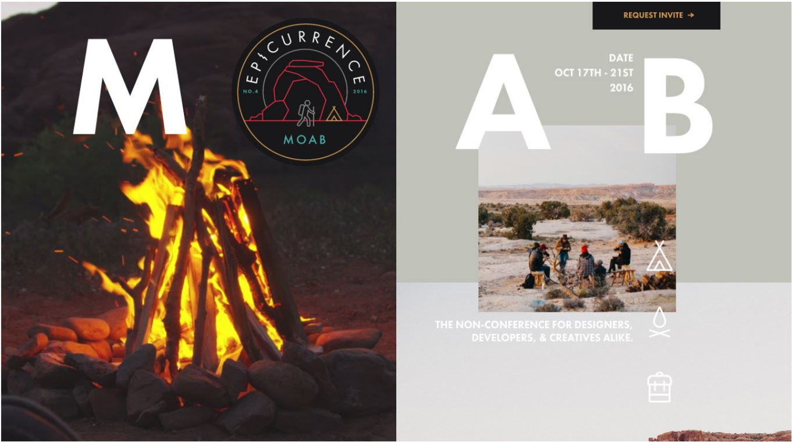

Lab 13: Typography I
In this lab 13 I'm recreating a website page just by looking at the image. Using what I know now to create a fake website page to look real.
Challenges
This lab was by far the hardest I have done to try and recreate a website because this one has so many elements to organize to put. But I challenged myself to try to recreate this website.
Problems
Most of the problem I had was the container of the elements to resize them in any format so it looks great in any device to stay scaled proported. The canyan photo on the bottom right does stay in the corner but scaling it doesn't stay next to the campfire picture so it doesn't show the background color. The biggest help in doing this lab was Wes example on the model because I inspected to check the codes to show on this page and seeing the css codes. Looking at CSS codes helped make the website be one screen page and making the containers for each elments and helped me make the campfire picture take up half the screen and stay that way while in differnt devices.
Results
As you can see in my Lab 13 I got to the result as close as I could to look I feel proud about it there is still more for me to learn. I would want to go back later to fix the canyon photo to stay in it's place even if it's scaled but everything eles seems to be working great.
Website Reference
Fake Website
-
Fake Website Page
Fake Website CSS Codes